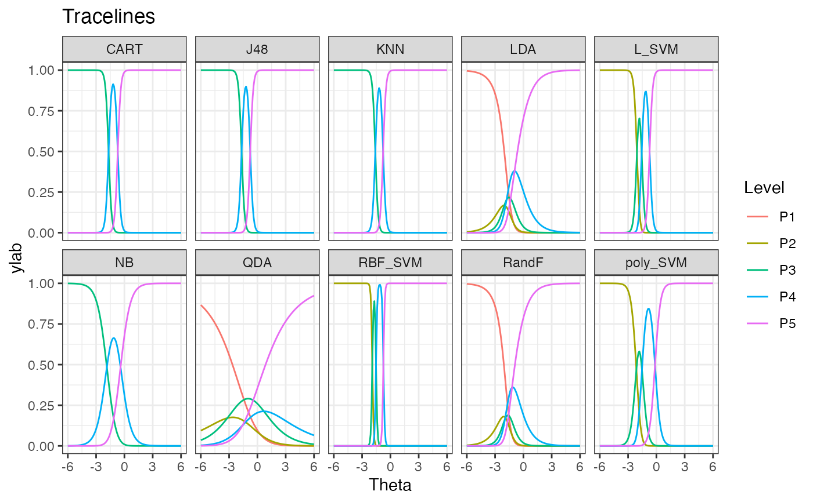

tracelines_poly.RdThis function makes a dataframe from the polytomous IRTmodel. The autoplot function can be used to plot trace lines
tracelines_poly(model)
# S3 method for tracelinespoly
autoplot(
object,
xlab = "Theta",
ylab = "Probability",
nrow = 2,
title = "Tracelines",
...
)Output from the function pirtmodel.
For autoplot: output of tracelines_poly function.
For autoplot: xlabel.
For autoplot: ylabel.
For autoplot: number of rows of heatmaps to plot.
For autoplot: the title for the plot.
Dataframe with output probabilities from the IRT model for all algorithms, an object of the class tracelinespoly.
data(classification_poly)
mod <- pirtmodel(classification_poly)
#>
Iteration: 1, Log-Lik: -1988.212, Max-Change: 5.72967
Iteration: 2, Log-Lik: -1563.347, Max-Change: 3.70621
Iteration: 3, Log-Lik: -1510.433, Max-Change: 4.12490
Iteration: 4, Log-Lik: -1491.315, Max-Change: 3.75905
Iteration: 5, Log-Lik: -1484.755, Max-Change: 0.97215
Iteration: 6, Log-Lik: -1481.645, Max-Change: 3.48316
Iteration: 7, Log-Lik: -1479.074, Max-Change: 0.47431
Iteration: 8, Log-Lik: -1476.611, Max-Change: 1.71452
Iteration: 9, Log-Lik: -1475.862, Max-Change: 3.14952
Iteration: 10, Log-Lik: -1474.299, Max-Change: 0.32261
Iteration: 11, Log-Lik: -1472.836, Max-Change: 0.25655
Iteration: 12, Log-Lik: -1472.580, Max-Change: 7.99628
Iteration: 13, Log-Lik: -1471.384, Max-Change: 0.12243
Iteration: 14, Log-Lik: -1471.229, Max-Change: 4.89077
Iteration: 15, Log-Lik: -1470.836, Max-Change: 0.85307
Iteration: 16, Log-Lik: -1470.802, Max-Change: 3.15196
Iteration: 17, Log-Lik: -1470.608, Max-Change: 1.53277
Iteration: 18, Log-Lik: -1470.495, Max-Change: 0.05526
Iteration: 19, Log-Lik: -1470.492, Max-Change: 1.85413
Iteration: 20, Log-Lik: -1470.399, Max-Change: 0.08930
Iteration: 21, Log-Lik: -1470.344, Max-Change: 0.12474
Iteration: 22, Log-Lik: -1470.271, Max-Change: 0.03388
Iteration: 23, Log-Lik: -1470.234, Max-Change: 0.03706
Iteration: 24, Log-Lik: -1470.202, Max-Change: 1.27550
Iteration: 25, Log-Lik: -1470.161, Max-Change: 0.03283
Iteration: 26, Log-Lik: -1470.134, Max-Change: 0.02845
Iteration: 27, Log-Lik: -1470.110, Max-Change: 0.02732
Iteration: 28, Log-Lik: -1469.988, Max-Change: 0.01825
Iteration: 29, Log-Lik: -1469.972, Max-Change: 0.02106
Iteration: 30, Log-Lik: -1469.957, Max-Change: 0.01885
Iteration: 31, Log-Lik: -1469.910, Max-Change: 0.02621
Iteration: 32, Log-Lik: -1469.897, Max-Change: 0.02270
Iteration: 33, Log-Lik: -1469.885, Max-Change: 0.02084
Iteration: 34, Log-Lik: -1469.831, Max-Change: 0.01643
Iteration: 35, Log-Lik: -1469.821, Max-Change: 0.01633
Iteration: 36, Log-Lik: -1469.812, Max-Change: 0.01659
Iteration: 37, Log-Lik: -1469.774, Max-Change: 0.01712
Iteration: 38, Log-Lik: -1469.766, Max-Change: 0.01380
Iteration: 39, Log-Lik: -1469.759, Max-Change: 0.01634
Iteration: 40, Log-Lik: -1469.747, Max-Change: 0.01339
Iteration: 41, Log-Lik: -1469.741, Max-Change: 0.01372
Iteration: 42, Log-Lik: -1469.736, Max-Change: 0.01524
Iteration: 43, Log-Lik: -1469.709, Max-Change: 0.00702
Iteration: 44, Log-Lik: -1469.704, Max-Change: 0.00875
Iteration: 45, Log-Lik: -1469.700, Max-Change: 0.00954
Iteration: 46, Log-Lik: -1469.689, Max-Change: 0.02794
Iteration: 47, Log-Lik: -1469.684, Max-Change: 0.00751
Iteration: 48, Log-Lik: -1469.682, Max-Change: 0.01045
Iteration: 49, Log-Lik: -1469.678, Max-Change: 0.00824
Iteration: 50, Log-Lik: -1469.675, Max-Change: 0.00895
Iteration: 51, Log-Lik: -1469.673, Max-Change: 0.00678
Iteration: 52, Log-Lik: -1469.671, Max-Change: 0.00956
Iteration: 53, Log-Lik: -1469.669, Max-Change: 0.00699
Iteration: 54, Log-Lik: -1469.667, Max-Change: 0.00623
Iteration: 55, Log-Lik: -1469.662, Max-Change: 0.00622
Iteration: 56, Log-Lik: -1469.660, Max-Change: 0.00454
Iteration: 57, Log-Lik: -1469.659, Max-Change: 0.00181
Iteration: 58, Log-Lik: -1469.659, Max-Change: 0.00497
Iteration: 59, Log-Lik: -1469.658, Max-Change: 0.00593
Iteration: 60, Log-Lik: -1469.657, Max-Change: 0.00492
Iteration: 61, Log-Lik: -1469.654, Max-Change: 0.00473
Iteration: 62, Log-Lik: -1469.653, Max-Change: 0.00150
Iteration: 63, Log-Lik: -1469.652, Max-Change: 0.00371
Iteration: 64, Log-Lik: -1469.651, Max-Change: 0.00418
Iteration: 65, Log-Lik: -1469.651, Max-Change: 0.00323
Iteration: 66, Log-Lik: -1469.650, Max-Change: 0.00323
Iteration: 67, Log-Lik: -1469.649, Max-Change: 0.00250
Iteration: 68, Log-Lik: -1469.648, Max-Change: 0.06658
Iteration: 69, Log-Lik: -1469.646, Max-Change: 0.00315
Iteration: 70, Log-Lik: -1469.646, Max-Change: 0.00312
Iteration: 71, Log-Lik: -1469.645, Max-Change: 0.00224
Iteration: 72, Log-Lik: -1469.645, Max-Change: 0.00248
Iteration: 73, Log-Lik: -1469.644, Max-Change: 0.00111
Iteration: 74, Log-Lik: -1469.644, Max-Change: 0.00225
Iteration: 75, Log-Lik: -1469.644, Max-Change: 0.00244
Iteration: 76, Log-Lik: -1469.642, Max-Change: 0.00159
Iteration: 77, Log-Lik: -1469.642, Max-Change: 0.00300
Iteration: 78, Log-Lik: -1469.642, Max-Change: 0.00134
Iteration: 79, Log-Lik: -1469.641, Max-Change: 0.00165
Iteration: 80, Log-Lik: -1469.641, Max-Change: 0.00071
Iteration: 81, Log-Lik: -1469.641, Max-Change: 0.00170
Iteration: 82, Log-Lik: -1469.641, Max-Change: 0.00053
Iteration: 83, Log-Lik: -1469.641, Max-Change: 0.00040
Iteration: 84, Log-Lik: -1469.641, Max-Change: 0.00042
Iteration: 85, Log-Lik: -1469.641, Max-Change: 0.00018
Iteration: 86, Log-Lik: -1469.641, Max-Change: 0.00018
Iteration: 87, Log-Lik: -1469.641, Max-Change: 0.00019
Iteration: 88, Log-Lik: -1469.641, Max-Change: 0.00024
Iteration: 89, Log-Lik: -1469.641, Max-Change: 0.00024
Iteration: 90, Log-Lik: -1469.641, Max-Change: 0.00025
Iteration: 91, Log-Lik: -1469.641, Max-Change: 0.00020
Iteration: 92, Log-Lik: -1469.641, Max-Change: 0.00020
Iteration: 93, Log-Lik: -1469.641, Max-Change: 0.00020
Iteration: 94, Log-Lik: -1469.641, Max-Change: 0.00021
Iteration: 95, Log-Lik: -1469.641, Max-Change: 0.00021
Iteration: 96, Log-Lik: -1469.641, Max-Change: 0.00022
Iteration: 97, Log-Lik: -1469.641, Max-Change: 0.00020
Iteration: 98, Log-Lik: -1469.641, Max-Change: 0.00020
Iteration: 99, Log-Lik: -1469.641, Max-Change: 0.00020
Iteration: 100, Log-Lik: -1469.641, Max-Change: 0.00020
Iteration: 101, Log-Lik: -1469.641, Max-Change: 0.00020
Iteration: 102, Log-Lik: -1469.641, Max-Change: 0.00021
Iteration: 103, Log-Lik: -1469.641, Max-Change: 0.00019
Iteration: 104, Log-Lik: -1469.641, Max-Change: 0.00019
Iteration: 105, Log-Lik: -1469.641, Max-Change: 0.00020
Iteration: 106, Log-Lik: -1469.641, Max-Change: 0.00019
Iteration: 107, Log-Lik: -1469.641, Max-Change: 0.00019
Iteration: 108, Log-Lik: -1469.641, Max-Change: 0.00020
Iteration: 109, Log-Lik: -1469.641, Max-Change: 0.00019
Iteration: 110, Log-Lik: -1469.641, Max-Change: 0.00019
Iteration: 111, Log-Lik: -1469.641, Max-Change: 0.00019
Iteration: 112, Log-Lik: -1469.641, Max-Change: 0.00018
Iteration: 113, Log-Lik: -1469.641, Max-Change: 0.00019
Iteration: 114, Log-Lik: -1469.641, Max-Change: 0.00019
Iteration: 115, Log-Lik: -1469.640, Max-Change: 0.00018
Iteration: 116, Log-Lik: -1469.640, Max-Change: 0.00018
Iteration: 117, Log-Lik: -1469.640, Max-Change: 0.00018
Iteration: 118, Log-Lik: -1469.640, Max-Change: 0.00018
Iteration: 119, Log-Lik: -1469.640, Max-Change: 0.00018
Iteration: 120, Log-Lik: -1469.640, Max-Change: 0.00019
Iteration: 121, Log-Lik: -1469.640, Max-Change: 0.00018
Iteration: 122, Log-Lik: -1469.640, Max-Change: 0.00018
Iteration: 123, Log-Lik: -1469.640, Max-Change: 0.00018
Iteration: 124, Log-Lik: -1469.640, Max-Change: 0.00017
Iteration: 125, Log-Lik: -1469.640, Max-Change: 0.00017
Iteration: 126, Log-Lik: -1469.640, Max-Change: 0.00018
Iteration: 127, Log-Lik: -1469.640, Max-Change: 0.00017
Iteration: 128, Log-Lik: -1469.640, Max-Change: 0.00017
Iteration: 129, Log-Lik: -1469.640, Max-Change: 0.00017
Iteration: 130, Log-Lik: -1469.640, Max-Change: 0.00017
Iteration: 131, Log-Lik: -1469.640, Max-Change: 0.00017
Iteration: 132, Log-Lik: -1469.640, Max-Change: 0.00018
Iteration: 133, Log-Lik: -1469.640, Max-Change: 0.00017
Iteration: 134, Log-Lik: -1469.640, Max-Change: 0.00017
Iteration: 135, Log-Lik: -1469.640, Max-Change: 0.00017
Iteration: 136, Log-Lik: -1469.640, Max-Change: 0.00016
Iteration: 137, Log-Lik: -1469.640, Max-Change: 0.00016
Iteration: 138, Log-Lik: -1469.640, Max-Change: 0.00017
Iteration: 139, Log-Lik: -1469.640, Max-Change: 0.00016
Iteration: 140, Log-Lik: -1469.640, Max-Change: 0.00016
Iteration: 141, Log-Lik: -1469.640, Max-Change: 0.00016
Iteration: 142, Log-Lik: -1469.640, Max-Change: 0.00016
Iteration: 143, Log-Lik: -1469.640, Max-Change: 0.00016
Iteration: 144, Log-Lik: -1469.640, Max-Change: 0.00017
Iteration: 145, Log-Lik: -1469.640, Max-Change: 0.00016
Iteration: 146, Log-Lik: -1469.640, Max-Change: 0.00016
Iteration: 147, Log-Lik: -1469.640, Max-Change: 0.00016
Iteration: 148, Log-Lik: -1469.640, Max-Change: 0.00015
Iteration: 149, Log-Lik: -1469.640, Max-Change: 0.00015
Iteration: 150, Log-Lik: -1469.640, Max-Change: 0.00016
Iteration: 151, Log-Lik: -1469.640, Max-Change: 0.00015
Iteration: 152, Log-Lik: -1469.640, Max-Change: 0.00016
Iteration: 153, Log-Lik: -1469.640, Max-Change: 0.00016
Iteration: 154, Log-Lik: -1469.640, Max-Change: 0.00015
Iteration: 155, Log-Lik: -1469.640, Max-Change: 0.00015
Iteration: 156, Log-Lik: -1469.640, Max-Change: 0.00016
Iteration: 157, Log-Lik: -1469.640, Max-Change: 0.00015
Iteration: 158, Log-Lik: -1469.640, Max-Change: 0.00015
Iteration: 159, Log-Lik: -1469.640, Max-Change: 0.00015
Iteration: 160, Log-Lik: -1469.640, Max-Change: 0.00015
Iteration: 161, Log-Lik: -1469.640, Max-Change: 0.00015
Iteration: 162, Log-Lik: -1469.640, Max-Change: 0.00015
Iteration: 163, Log-Lik: -1469.640, Max-Change: 0.00014
Iteration: 164, Log-Lik: -1469.640, Max-Change: 0.00015
Iteration: 165, Log-Lik: -1469.640, Max-Change: 0.00015
Iteration: 166, Log-Lik: -1469.640, Max-Change: 0.00014
Iteration: 167, Log-Lik: -1469.640, Max-Change: 0.00014
Iteration: 168, Log-Lik: -1469.640, Max-Change: 0.00015
Iteration: 169, Log-Lik: -1469.640, Max-Change: 0.00014
Iteration: 170, Log-Lik: -1469.640, Max-Change: 0.00014
Iteration: 171, Log-Lik: -1469.640, Max-Change: 0.00015
Iteration: 172, Log-Lik: -1469.640, Max-Change: 0.00014
Iteration: 173, Log-Lik: -1469.640, Max-Change: 0.00014
Iteration: 174, Log-Lik: -1469.640, Max-Change: 0.00015
Iteration: 175, Log-Lik: -1469.640, Max-Change: 0.00014
Iteration: 176, Log-Lik: -1469.640, Max-Change: 0.00014
Iteration: 177, Log-Lik: -1469.640, Max-Change: 0.00014
Iteration: 178, Log-Lik: -1469.640, Max-Change: 0.00014
Iteration: 179, Log-Lik: -1469.640, Max-Change: 0.00014
Iteration: 180, Log-Lik: -1469.640, Max-Change: 0.00014
Iteration: 181, Log-Lik: -1469.640, Max-Change: 0.00013
Iteration: 182, Log-Lik: -1469.640, Max-Change: 0.00014
Iteration: 183, Log-Lik: -1469.640, Max-Change: 0.00014
Iteration: 184, Log-Lik: -1469.640, Max-Change: 0.00013
Iteration: 185, Log-Lik: -1469.640, Max-Change: 0.00013
Iteration: 186, Log-Lik: -1469.640, Max-Change: 0.00014
Iteration: 187, Log-Lik: -1469.640, Max-Change: 0.00013
Iteration: 188, Log-Lik: -1469.640, Max-Change: 0.00014
Iteration: 189, Log-Lik: -1469.640, Max-Change: 0.00014
Iteration: 190, Log-Lik: -1469.640, Max-Change: 0.00013
Iteration: 191, Log-Lik: -1469.640, Max-Change: 0.00013
Iteration: 192, Log-Lik: -1469.640, Max-Change: 0.00014
Iteration: 193, Log-Lik: -1469.640, Max-Change: 0.00013
Iteration: 194, Log-Lik: -1469.640, Max-Change: 0.00013
Iteration: 195, Log-Lik: -1469.640, Max-Change: 0.00013
Iteration: 196, Log-Lik: -1469.640, Max-Change: 0.00013
Iteration: 197, Log-Lik: -1469.640, Max-Change: 0.00013
Iteration: 198, Log-Lik: -1469.640, Max-Change: 0.00013
Iteration: 199, Log-Lik: -1469.640, Max-Change: 0.00012
Iteration: 200, Log-Lik: -1469.640, Max-Change: 0.00013
Iteration: 201, Log-Lik: -1469.640, Max-Change: 0.00013
Iteration: 202, Log-Lik: -1469.640, Max-Change: 0.00013
Iteration: 203, Log-Lik: -1469.640, Max-Change: 0.00013
Iteration: 204, Log-Lik: -1469.640, Max-Change: 0.00013
Iteration: 205, Log-Lik: -1469.640, Max-Change: 0.00012
Iteration: 206, Log-Lik: -1469.640, Max-Change: 0.00013
Iteration: 207, Log-Lik: -1469.640, Max-Change: 0.00013
Iteration: 208, Log-Lik: -1469.640, Max-Change: 0.00012
Iteration: 209, Log-Lik: -1469.640, Max-Change: 0.00012
Iteration: 210, Log-Lik: -1469.640, Max-Change: 0.00013
Iteration: 211, Log-Lik: -1469.640, Max-Change: 0.00012
Iteration: 212, Log-Lik: -1469.640, Max-Change: 0.00012
Iteration: 213, Log-Lik: -1469.640, Max-Change: 0.00013
Iteration: 214, Log-Lik: -1469.640, Max-Change: 0.00012
Iteration: 215, Log-Lik: -1469.640, Max-Change: 0.00012
Iteration: 216, Log-Lik: -1469.640, Max-Change: 0.00013
Iteration: 217, Log-Lik: -1469.640, Max-Change: 0.00012
Iteration: 218, Log-Lik: -1469.640, Max-Change: 0.00012
Iteration: 219, Log-Lik: -1469.640, Max-Change: 0.00012
Iteration: 220, Log-Lik: -1469.640, Max-Change: 0.00012
Iteration: 221, Log-Lik: -1469.640, Max-Change: 0.00012
Iteration: 222, Log-Lik: -1469.640, Max-Change: 0.00012
Iteration: 223, Log-Lik: -1469.640, Max-Change: 0.00012
Iteration: 224, Log-Lik: -1469.640, Max-Change: 0.00012
Iteration: 225, Log-Lik: -1469.640, Max-Change: 0.00012
Iteration: 226, Log-Lik: -1469.640, Max-Change: 0.00012
Iteration: 227, Log-Lik: -1469.640, Max-Change: 0.00012
Iteration: 228, Log-Lik: -1469.640, Max-Change: 0.00012
Iteration: 229, Log-Lik: -1469.640, Max-Change: 0.00011
Iteration: 230, Log-Lik: -1469.640, Max-Change: 0.00012
Iteration: 231, Log-Lik: -1469.640, Max-Change: 0.00012
Iteration: 232, Log-Lik: -1469.640, Max-Change: 0.00011
Iteration: 233, Log-Lik: -1469.640, Max-Change: 0.00012
Iteration: 234, Log-Lik: -1469.640, Max-Change: 0.00012
Iteration: 235, Log-Lik: -1469.640, Max-Change: 0.00011
Iteration: 236, Log-Lik: -1469.640, Max-Change: 0.00012
Iteration: 237, Log-Lik: -1469.640, Max-Change: 0.00012
Iteration: 238, Log-Lik: -1469.640, Max-Change: 0.00011
Iteration: 239, Log-Lik: -1469.640, Max-Change: 0.00011
Iteration: 240, Log-Lik: -1469.640, Max-Change: 0.00012
Iteration: 241, Log-Lik: -1469.640, Max-Change: 0.00011
Iteration: 242, Log-Lik: -1469.640, Max-Change: 0.00011
Iteration: 243, Log-Lik: -1469.640, Max-Change: 0.00011
Iteration: 244, Log-Lik: -1469.640, Max-Change: 0.00011
Iteration: 245, Log-Lik: -1469.640, Max-Change: 0.00011
Iteration: 246, Log-Lik: -1469.640, Max-Change: 0.00012
Iteration: 247, Log-Lik: -1469.640, Max-Change: 0.00011
Iteration: 248, Log-Lik: -1469.640, Max-Change: 0.00011
Iteration: 249, Log-Lik: -1469.640, Max-Change: 0.00011
Iteration: 250, Log-Lik: -1469.640, Max-Change: 0.00011
Iteration: 251, Log-Lik: -1469.640, Max-Change: 0.00011
Iteration: 252, Log-Lik: -1469.640, Max-Change: 0.00011
Iteration: 253, Log-Lik: -1469.640, Max-Change: 0.00011
Iteration: 254, Log-Lik: -1469.640, Max-Change: 0.00011
Iteration: 255, Log-Lik: -1469.640, Max-Change: 0.00011
Iteration: 256, Log-Lik: -1469.640, Max-Change: 0.00011
Iteration: 257, Log-Lik: -1469.640, Max-Change: 0.00011
Iteration: 258, Log-Lik: -1469.640, Max-Change: 0.00011
Iteration: 259, Log-Lik: -1469.640, Max-Change: 0.00011
Iteration: 260, Log-Lik: -1469.639, Max-Change: 0.00011
Iteration: 261, Log-Lik: -1469.639, Max-Change: 0.00011
Iteration: 262, Log-Lik: -1469.639, Max-Change: 0.00011
Iteration: 263, Log-Lik: -1469.639, Max-Change: 0.00011
Iteration: 264, Log-Lik: -1469.639, Max-Change: 0.00011
Iteration: 265, Log-Lik: -1469.639, Max-Change: 0.00010
Iteration: 266, Log-Lik: -1469.639, Max-Change: 0.00011
Iteration: 267, Log-Lik: -1469.639, Max-Change: 0.00011
Iteration: 268, Log-Lik: -1469.639, Max-Change: 0.00010
Iteration: 269, Log-Lik: -1469.639, Max-Change: 0.00010
Iteration: 270, Log-Lik: -1469.639, Max-Change: 0.00011
Iteration: 271, Log-Lik: -1469.639, Max-Change: 0.00010
Iteration: 272, Log-Lik: -1469.639, Max-Change: 0.00011
Iteration: 273, Log-Lik: -1469.639, Max-Change: 0.00011
Iteration: 274, Log-Lik: -1469.639, Max-Change: 0.00010
Iteration: 275, Log-Lik: -1469.639, Max-Change: 0.00010
Iteration: 276, Log-Lik: -1469.639, Max-Change: 0.00011
Iteration: 277, Log-Lik: -1469.639, Max-Change: 0.00010
Iteration: 278, Log-Lik: -1469.639, Max-Change: 0.00010
Iteration: 279, Log-Lik: -1469.639, Max-Change: 0.00010
Iteration: 280, Log-Lik: -1469.639, Max-Change: 0.00010
Iteration: 281, Log-Lik: -1469.639, Max-Change: 0.00010
Iteration: 282, Log-Lik: -1469.639, Max-Change: 0.00011
Iteration: 283, Log-Lik: -1469.639, Max-Change: 0.00010
obj <- tracelines_poly(mod)
head(obj$df)
#> # A tibble: 6 × 4
#> Theta Algorithm Level value
#> <dbl> <chr> <chr> <dbl>
#> 1 -6 NB P3 1.00
#> 2 -6 NB P4 0.000396
#> 3 -6 NB P5 0.0000000100
#> 4 -5.9 NB P3 1.00
#> 5 -5.9 NB P4 0.000478
#> 6 -5.9 NB P5 0.0000000146
autoplot(obj)
